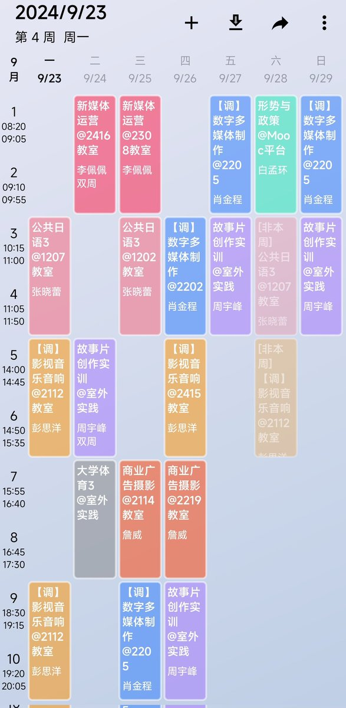

寒涟漪
@HANLIANYI331
在我14到20岁时期，我的体力，精力和行动力曾好到一个夸张的程度，中考体育也是满分，200米短跑能跑进26秒，甚至能在同时兼顾学业、赚钱、社交和娱乐的同时去做危机干预，额外的时间往往会拿睡眠和休息时间来挤，一天的工作时间常常能到14～16小时。
后来随着年龄的增长，身体和记忆力越来越差，为了保持每天的工作量，我砍掉了大量曾经的娱乐，社交和兴趣爱好。最后到了今天，哪怕是一天工作6～8个小时，也已经是让我非常疲惫的事情了。

寒涟漪
@HANLIANYI331
一手抓救助，一手抓上课，一手抓实习，一手抓考证，一手抓升学，一手抓赚钱 https://t.co/okT21STP6z